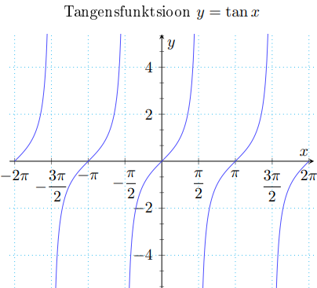

Kõik trigonomeetrilised funktsioonid on perioodilised ja seega pole üksühesed
ja pööratavad.
Kuid vaadelduna mingis intervallis, kus ta on üksühene,
trigonomeetriline funktsioon on pööratav ja tema pöördfunktsiooniks on vastav arkusfunktsioon
Siinusfunktsioon f(x) = sin x ja koosinusfunktsioon f(x) = cos x
Siinusfunktsioon
• X = R, Y = [−1, 1]
• paaritu
• perioodiline, põhiperiood T0 = 2π
• tõkestatud
l
Koosinusfunktsioon
• X = R, Y = [−1, 1]
• paaris
• perioodiline, põhiperiood T0 = 2π
• tõkestatud
Tangensfunktsioon f(x) = tan x
Tangesi saab alati tuletada siinuse ja koosinuse kaudu: tan x = sin x / cos x
• X = R \ {(π / 2) + kπ : k ∈ Z}, Y = R
• perioodiline, põhiperiood T0 = π
• paaritu

Kootangensfunktsioon f(x) = cot x
Kootangensi saab alati tuletada tangensist või siinuse
ja koosinuse kaudu:
cot x = (1 / tan x) = cos x / sin x
• X = R \ {kπ : k ∈ Z}, Y = R
• perioodiline, põhiperiood T0 = π
• paaritu